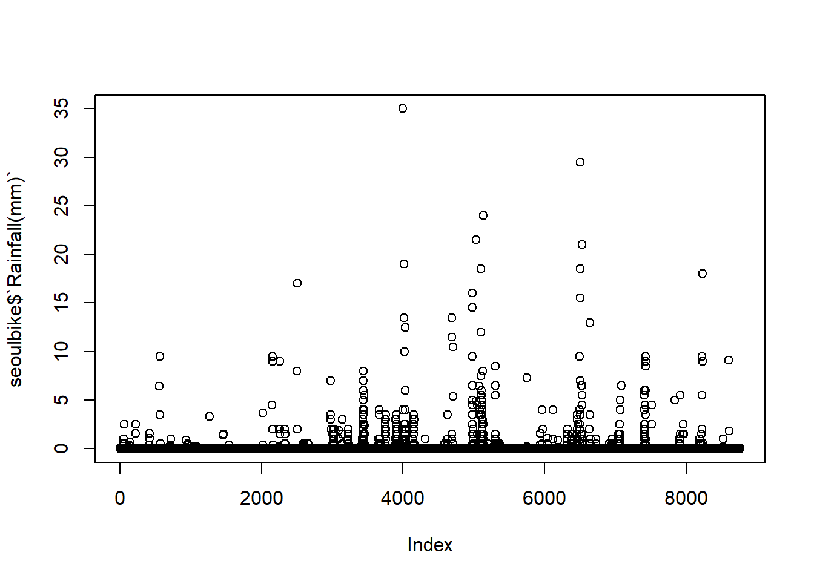
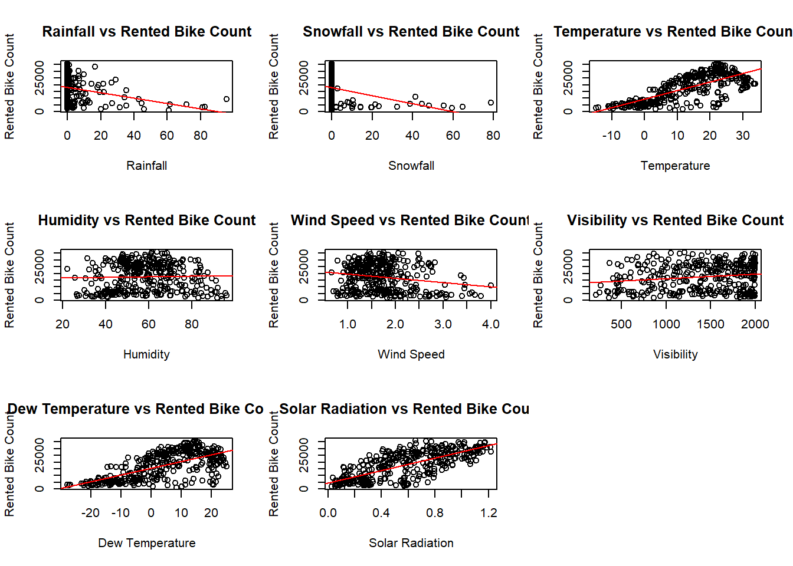
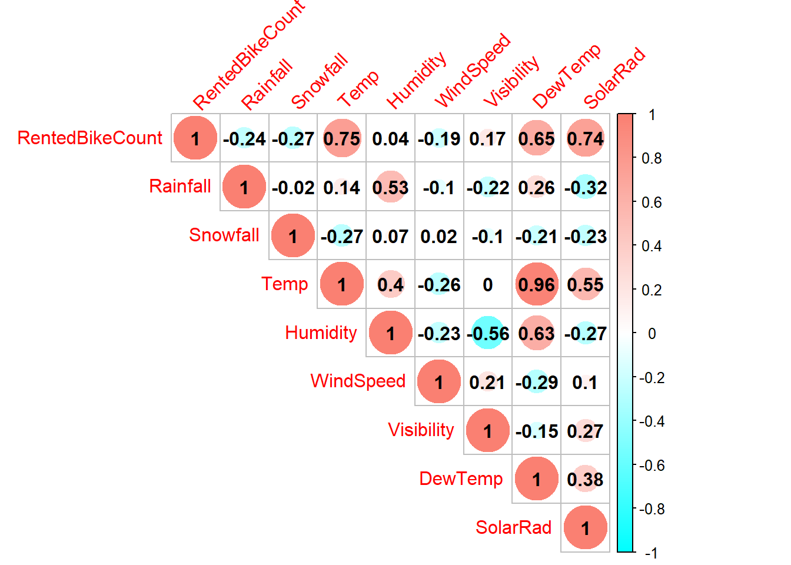

library(tidyverse)
library(tidymodels)
library(lubridate)
library(corrplot)
set.seed(558)Modeling
Purpose: This program seeks to complete the exercises listed in Homework 8, for ST558. This homework uses basic modeling practices, including exploratory data analysis and test and training data splits. After validating the necessary data frames and data points, we plot to see relationships between predictors and the response variable. Then, we split the data and analyze 3 different models concerning these predictors and response.
seoulbike <- read_csv("SeoulBikeData.csv", locale=locale(encoding="latin1"))Task 1: Validate The Data
Validating the data is an important precursor to making sure that everything that we have lines up. If we didn’t do this in application, we may find that we would get some unexpected results!
Checking for missing values
sum(is.na(seoulbike))[1] 0We have no missing values! Excellent.
Types of Variables
Using the tibble function, we can see all of the values and types of the variables.
as_tibble(seoulbike, width = Inf)# A tibble: 8,760 × 14
Date `Rented Bike Count` Hour `Temperature(°C)` `Humidity(%)`
<chr> <dbl> <dbl> <dbl> <dbl>
1 01/12/2017 254 0 -5.2 37
2 01/12/2017 204 1 -5.5 38
3 01/12/2017 173 2 -6 39
4 01/12/2017 107 3 -6.2 40
5 01/12/2017 78 4 -6 36
6 01/12/2017 100 5 -6.4 37
7 01/12/2017 181 6 -6.6 35
8 01/12/2017 460 7 -7.4 38
9 01/12/2017 930 8 -7.6 37
10 01/12/2017 490 9 -6.5 27
# ℹ 8,750 more rows
# ℹ 9 more variables: `Wind speed (m/s)` <dbl>, `Visibility (10m)` <dbl>,
# `Dew point temperature(°C)` <dbl>, `Solar Radiation (MJ/m2)` <dbl>,
# `Rainfall(mm)` <dbl>, `Snowfall (cm)` <dbl>, Seasons <chr>, Holiday <chr>,
# `Functioning Day` <chr>Most of these make sense, but we have a few values we should probably convert to factors. Let’s do that first:
Convert Character To Factor
seoulbike$Seasons <- as.factor(seoulbike$Seasons)
seoulbike$Holiday <- as.factor(seoulbike$Holiday)
seoulbike$`Functioning Day` <- as.factor(seoulbike$`Functioning Day`)
seoulbike$Date <- dmy(seoulbike$Date)Now let’s view the data again before we do any summaries:
as_tibble(seoulbike, width = Inf)# A tibble: 8,760 × 14
Date `Rented Bike Count` Hour `Temperature(°C)` `Humidity(%)`
<date> <dbl> <dbl> <dbl> <dbl>
1 2017-12-01 254 0 -5.2 37
2 2017-12-01 204 1 -5.5 38
3 2017-12-01 173 2 -6 39
4 2017-12-01 107 3 -6.2 40
5 2017-12-01 78 4 -6 36
6 2017-12-01 100 5 -6.4 37
7 2017-12-01 181 6 -6.6 35
8 2017-12-01 460 7 -7.4 38
9 2017-12-01 930 8 -7.6 37
10 2017-12-01 490 9 -6.5 27
# ℹ 8,750 more rows
# ℹ 9 more variables: `Wind speed (m/s)` <dbl>, `Visibility (10m)` <dbl>,
# `Dew point temperature(°C)` <dbl>, `Solar Radiation (MJ/m2)` <dbl>,
# `Rainfall(mm)` <dbl>, `Snowfall (cm)` <dbl>, Seasons <fct>, Holiday <fct>,
# `Functioning Day` <fct>Everything looks like it makes sense!
Summary Statistics and Levels
Let’s now validate the range of values and summary statistics that all of the numeric and character variables have. This will let us see if there are any weird things going on in the data.
seoulbike |>
select(where(is.numeric)) |>
summary() Rented Bike Count Hour Temperature(°C) Humidity(%)
Min. : 0.0 Min. : 0.00 Min. :-17.80 Min. : 0.00
1st Qu.: 191.0 1st Qu.: 5.75 1st Qu.: 3.50 1st Qu.:42.00
Median : 504.5 Median :11.50 Median : 13.70 Median :57.00
Mean : 704.6 Mean :11.50 Mean : 12.88 Mean :58.23
3rd Qu.:1065.2 3rd Qu.:17.25 3rd Qu.: 22.50 3rd Qu.:74.00
Max. :3556.0 Max. :23.00 Max. : 39.40 Max. :98.00
Wind speed (m/s) Visibility (10m) Dew point temperature(°C)
Min. :0.000 Min. : 27 Min. :-30.600
1st Qu.:0.900 1st Qu.: 940 1st Qu.: -4.700
Median :1.500 Median :1698 Median : 5.100
Mean :1.725 Mean :1437 Mean : 4.074
3rd Qu.:2.300 3rd Qu.:2000 3rd Qu.: 14.800
Max. :7.400 Max. :2000 Max. : 27.200
Solar Radiation (MJ/m2) Rainfall(mm) Snowfall (cm)
Min. :0.0000 Min. : 0.0000 Min. :0.00000
1st Qu.:0.0000 1st Qu.: 0.0000 1st Qu.:0.00000
Median :0.0100 Median : 0.0000 Median :0.00000
Mean :0.5691 Mean : 0.1487 Mean :0.07507
3rd Qu.:0.9300 3rd Qu.: 0.0000 3rd Qu.:0.00000
Max. :3.5200 Max. :35.0000 Max. :8.80000 unique(seoulbike$Seasons)[1] Winter Spring Summer Autumn
Levels: Autumn Spring Summer Winterunique(seoulbike$Holiday)[1] No Holiday Holiday
Levels: Holiday No Holidayunique(seoulbike$`Functioning Day`)[1] Yes No
Levels: No YesAll of these seem to make sense, Rainfall of 35 might be an outlier so we can investigate:
plot(seoulbike$`Rainfall(mm)`)
Does not appear to be an outlier, the dataset is just heavy on zeroes. It’s good practice to investigate, though!
Rename Variables
seoulbike <- seoulbike |>
rename(Temp = `Temperature(°C)`,
Humidity = `Humidity(%)`,
WindSpeed = `Wind speed (m/s)`,
Visibility = `Visibility (10m)`,
RentedBikeCount = `Rented Bike Count`,
DewTemp = `Dew point temperature(°C)`,
SolarRad = `Solar Radiation (MJ/m2)`,
Rainfall = `Rainfall(mm)`,
Snowfall = `Snowfall (cm)`,
FuncDay = `Functioning Day`
)Excellent, this will make our coding much more seamless.
Complex Summary Statistics
Now let’s make our summary statistics more complex and across the factors. This will allow us to see if there are any trends in the data we should be worried about or keep in mind while we model.
num_sum_seasons <- seoulbike |>
group_by(Seasons) |>
summarise(across(where(is.numeric),
list(
Min = ~min(. , na.rm = TRUE),
Max = ~max(. , na.rm = TRUE),
Mean = ~mean(. , na.rm = TRUE),
Median = ~median(. , na.rm = TRUE),
SD = ~sd(. , na.rm = TRUE),
IQR = ~IQR(. , na.rm = TRUE)),
.names = "{.col}_{.fn}")) |>
pivot_longer(cols = -Seasons, names_to = c("Variable", ".value"),
names_sep = "_")num_sum_holiday <- seoulbike |>
group_by(Holiday) |>
summarise(across(where(is.numeric),
list(
Min = ~min(. , na.rm = TRUE),
Max = ~max(. , na.rm = TRUE),
Mean = ~mean(. , na.rm = TRUE),
Median = ~median(. , na.rm = TRUE),
SD = ~sd(. , na.rm = TRUE),
IQR = ~IQR(. , na.rm = TRUE)),
.names = "{.col}_{.fn}")) |>
pivot_longer(cols = -Holiday, names_to = c("Variable", ".value"),
names_sep = "_")num_sum_funcday <- seoulbike |>
group_by(FuncDay) |>
summarise(across(where(is.numeric),
list(
Min = ~min(. , na.rm = TRUE),
Max = ~max(. , na.rm = TRUE),
Mean = ~mean(. , na.rm = TRUE),
Median = ~median(. , na.rm = TRUE),
SD = ~sd(. , na.rm = TRUE),
IQR = ~IQR(. , na.rm = TRUE),
nObs = ~sum(!is.na(.x))),
.names = "{.col}_{.fn}")) |>
pivot_longer(cols = -FuncDay, names_to = c("Variable", ".value"),
names_sep = "_")So what I’m noticing for the FuncDay variable is that the rented bike count and snowfall is 0 for all 295 observations when FuncDay == No. I don’t know if this is what we are supposed to “notice” and “subset” on, but in the field I would be very hesitant to just remove 295 data points. All analysis going forward will be conditional on the fact that FuncDay == Yes only.
Summarize Across Hours
Let’s group this with number 7, summarizing across hours. Then we will go ahead and create new summary statistics.
seoulbike_new <- seoulbike |>
filter(FuncDay == "Yes") |>
group_by(Date, Seasons, Holiday) |>
summarise(
RentedBikeCount = sum(RentedBikeCount),
Rainfall = sum(Rainfall),
Snowfall = sum(Snowfall),
Temp = mean(Temp),
Humidity = mean(Humidity),
WindSpeed = mean(WindSpeed),
Visibility = mean(Visibility),
DewTemp = mean(DewTemp),
SolarRad = mean(SolarRad),
.groups = "keep"
)Final Summary Statistics of Explored Data
seoulbike_new |>
summary() Date Seasons Holiday RentedBikeCount
Min. :2017-12-01 Autumn:81 Holiday : 17 Min. : 977
1st Qu.:2018-02-27 Spring:90 No Holiday:336 1st Qu.: 6967
Median :2018-05-28 Summer:92 Median :18563
Mean :2018-05-28 Winter:90 Mean :17485
3rd Qu.:2018-08-24 3rd Qu.:26285
Max. :2018-11-30 Max. :36149
Rainfall Snowfall Temp Humidity
Min. : 0.000 Min. : 0.000 Min. :-14.738 Min. :22.25
1st Qu.: 0.000 1st Qu.: 0.000 1st Qu.: 3.304 1st Qu.:47.58
Median : 0.000 Median : 0.000 Median : 13.738 Median :57.17
Mean : 3.576 Mean : 1.863 Mean : 12.776 Mean :58.17
3rd Qu.: 0.500 3rd Qu.: 0.000 3rd Qu.: 22.592 3rd Qu.:67.71
Max. :95.500 Max. :78.700 Max. : 33.742 Max. :95.88
WindSpeed Visibility DewTemp SolarRad
Min. :0.6625 Min. : 214.3 Min. :-27.750 Min. :0.02917
1st Qu.:1.3042 1st Qu.:1087.0 1st Qu.: -5.188 1st Qu.:0.28333
Median :1.6583 Median :1557.8 Median : 4.612 Median :0.56500
Mean :1.7261 Mean :1434.0 Mean : 3.954 Mean :0.56773
3rd Qu.:1.9542 3rd Qu.:1874.3 3rd Qu.: 14.921 3rd Qu.:0.82000
Max. :4.0000 Max. :2000.0 Max. : 25.038 Max. :1.21667 Once again, nothing looks out of the ordinary.
Plots of Response and Predictors
I plan to model using RentedBikeCount as the response variable. Let’s go ahead and create plots for all of the numeric predictors versus RentedBikeCount.
seoulbike_new_model <- seoulbike_new |>
ungroup()
par(mfrow=c(3,3))
plot(seoulbike_new_model$Rainfall, seoulbike_new_model$RentedBikeCount,
xlab = "Rainfall", ylab = "Rented Bike Count", main = "Rainfall vs Rented Bike Count")
abline(lm(seoulbike_new_model$RentedBikeCount ~ seoulbike_new_model$Rainfall), col = "red")
plot(seoulbike_new_model$Snowfall, seoulbike_new_model$RentedBikeCount,
xlab = "Snowfall", ylab = "Rented Bike Count", main = "Snowfall vs Rented Bike Count")
abline(lm(seoulbike_new_model$RentedBikeCount ~ seoulbike_new_model$Snowfall), col = "red")
plot(seoulbike_new_model$Temp, seoulbike_new_model$RentedBikeCount,
xlab = "Temperature", ylab = "Rented Bike Count", main = "Temperature vs Rented Bike Count")
abline(lm(seoulbike_new_model$RentedBikeCount ~ seoulbike_new_model$Temp), col = "red")
plot(seoulbike_new_model$Humidity, seoulbike_new_model$RentedBikeCount,
xlab = "Humidity", ylab = "Rented Bike Count", main = "Humidity vs Rented Bike Count")
abline(lm(seoulbike_new_model$RentedBikeCount ~ seoulbike_new_model$Humidity), col = "red")
plot(seoulbike_new_model$WindSpeed, seoulbike_new_model$RentedBikeCount,
xlab = "Wind Speed", ylab = "Rented Bike Count", main = "Wind Speed vs Rented Bike Count")
abline(lm(seoulbike_new_model$RentedBikeCount ~ seoulbike_new_model$WindSpeed), col = "red")
plot(seoulbike_new_model$Visibility, seoulbike_new_model$RentedBikeCount,
xlab = "Visibility", ylab = "Rented Bike Count", main = "Visibility vs Rented Bike Count")
abline(lm(seoulbike_new_model$RentedBikeCount ~ seoulbike_new_model$Visibility), col = "red")
plot(seoulbike_new_model$DewTemp, seoulbike_new_model$RentedBikeCount,
xlab = "Dew Temperature", ylab = "Rented Bike Count", main = "Dew Temperature vs Rented Bike Count")
abline(lm(seoulbike_new_model$RentedBikeCount ~ seoulbike_new_model$DewTemp), col = "red")
plot(seoulbike_new_model$SolarRad, seoulbike_new_model$RentedBikeCount,
xlab = "Solar Radiation", ylab = "Rented Bike Count", main = "Solar Radiation vs Rented Bike Count")
abline(lm(seoulbike_new_model$RentedBikeCount ~ seoulbike_new_model$SolarRad), col = "red")
The most useful predictors seem to be Temperature, Solar Radiation, and Dew Temperature. That makes sense, since warmer weathers would warrant more people wanting to buy bikes.
Correlation Between Numeric Variables
seoulbike_new_model |>
select(where(is.numeric)) |>
mutate(across(everything(), as.numeric)) |>
cor(use = "complete.obs") |>
corrplot(
method = "circle",
type = "upper",
tl.col = "red",
tl.srt = 45,
addCoef.col = "black",
col = colorRampPalette(c("cyan", "white", "salmon"))(200)
)
Some of the predictors are highly correlated. Those same 3 useful predictors pop up again, but we definitely expect to see some of these high predictors in our final models.
Task 2: Modeling
Test Train Split
Creating the test train split with strata of seasons. This lets us account to make sure we don’t overfit later!
data_split <- initial_split(seoulbike_new_model, prop = 0.75, strata = "Seasons")
train_data <- training(data_split)
test_data <- testing(data_split)
cv_folds <- vfold_cv(train_data, v = 10)Recipe 1
In this recipe, we create dummy variable and standardize the numeric scales. This one is kept relatively simple!
rec_1 <- recipe(RentedBikeCount~ ., data = train_data) |>
step_mutate(dow = weekdays(Date))|>
step_mutate(Day = factor(if_else(dow %in% c("Saturday", "Sunday"), "Weekend", "Weekday"))) |>
step_select(-Date, -dow) |>
step_normalize(all_numeric()) |>
step_dummy(Seasons, Holiday, Day)
#prep(training = train_data) |>
#bake(train_data)Recipe 2
This builds on the first recipe, introducing interactions where necessary.
rec_2 <- recipe(RentedBikeCount~ ., data = train_data) |>
step_mutate(dow = weekdays(Date)) |>
step_mutate(Day = factor(if_else(dow %in% c("Saturday", "Sunday"), "Weekend", "Weekday"))) |>
step_select(-Date, -dow) |>
step_normalize(all_numeric()) |>
step_dummy(Seasons, Holiday, Day) |>
step_interact(terms = ~ starts_with("Seasons"):starts_with("Holiday")) |>
step_interact(terms = ~ starts_with("Seasons"):starts_with("Temp")) |>
step_interact(terms = ~ starts_with("Temp"):starts_with("Rainfall"))
#prep(training = train_data) |>
#bake(train_data)Recipe 3
This builds on recipe 1 and 2, adding quadratic terms for each numeric predictor.
rec_3 <- recipe(RentedBikeCount~., data = train_data) |>
step_mutate(dow = weekdays(Date)) |>
step_mutate(Day = factor(if_else(dow %in% c("Saturday", "Sunday"), "Weekend", "Weekday"))) |>
step_select(-Date, -dow) |>
step_normalize(all_numeric()) |>
step_dummy(Seasons, Holiday, Day) |>
step_interact(terms = ~ starts_with("Seasons"):starts_with("Holiday")) |>
step_interact(terms = ~ starts_with("Seasons"):starts_with("Temp")) |>
step_interact(terms = ~ starts_with("Temp"):starts_with("Rainfall")) |>
step_poly(Rainfall, Snowfall, Temp, Humidity, WindSpeed, Visibility, DewTemp, SolarRad, degree = 2)
#prep(training = train_data) |>
#bake(train_data)Set up Engine
Using set engine, we initialize bike model.
bike_mod <- linear_reg() |>
set_engine("lm")Final Models and Evaluate
bike_CV_fits1 <- workflow() |>
add_recipe(rec_1) |>
add_model(bike_mod) |>
fit_resamples(cv_folds)
bike_CV_fits2 <- workflow() |>
add_recipe(rec_2) |>
add_model(bike_mod) |>
fit_resamples(cv_folds)
bike_CV_fits3 <- workflow() |>
add_recipe(rec_3) |>
add_model(bike_mod) |>
fit_resamples(cv_folds)
rbind(bike_CV_fits1 |> collect_metrics(),
bike_CV_fits2 |> collect_metrics(),
bike_CV_fits3 |> collect_metrics())# A tibble: 6 × 6
.metric .estimator mean n std_err .config
<chr> <chr> <dbl> <int> <dbl> <chr>
1 rmse standard 0.413 10 0.0209 Preprocessor1_Model1
2 rsq standard 0.828 10 0.0159 Preprocessor1_Model1
3 rmse standard 0.538 10 0.196 Preprocessor1_Model1
4 rsq standard 0.821 10 0.0631 Preprocessor1_Model1
5 rmse standard 0.505 10 0.183 Preprocessor1_Model1
6 rsq standard 0.835 10 0.0614 Preprocessor1_Model1From this, we can see that the best model is Fit 1, the simple model. The RMSE is the smallest, and even though the \(R^2\) is the largest for the 3rd model, it looks like it is overfit.
Fit Model on Entire Training Set and Evaluate on Test Set
best_fit <- workflow() |>
add_recipe(rec_1) |>
add_model(bike_mod) |>
last_fit(split = data_split)
best_fit |> collect_metrics()# A tibble: 2 × 4
.metric .estimator .estimate .config
<chr> <chr> <dbl> <chr>
1 rmse standard 0.424 Preprocessor1_Model1
2 rsq standard 0.831 Preprocessor1_Model1Excellent! Looks like the model fits well.
Final Coefficients
best_fit |> extract_fit_parsnip() |> tidy()# A tibble: 14 × 5
term estimate std.error statistic p.value
<chr> <dbl> <dbl> <dbl> <dbl>
1 (Intercept) 0.0822 0.131 0.628 5.30e- 1
2 Rainfall -0.191 0.0333 -5.72 3.04e- 8
3 Snowfall -0.0277 0.0273 -1.02 3.10e- 1
4 Temp -0.801 0.470 -1.70 9.00e- 2
5 Humidity -0.423 0.179 -2.36 1.90e- 2
6 WindSpeed -0.0687 0.0292 -2.35 1.94e- 2
7 Visibility -0.0338 0.0359 -0.942 3.47e- 1
8 DewTemp 1.39 0.553 2.51 1.29e- 2
9 SolarRad 0.436 0.0469 9.29 8.09e-18
10 Seasons_Spring -0.548 0.0818 -6.70 1.36e-10
11 Seasons_Summer -0.386 0.103 -3.76 2.11e- 4
12 Seasons_Winter -0.837 0.108 -7.73 2.60e-13
13 Holiday_No.Holiday 0.473 0.123 3.86 1.47e- 4
14 Day_Weekend -0.278 0.0566 -4.91 1.66e- 6